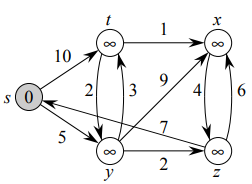

Aquí se encuentran algoritmos usados en graficas dirigidas y problemas que involucran un coste.
Como varios algoritmos en esta página hacen uso de la tecnica de relajacion se mantiene por separado estas funciones por referencia.
Hay 2 algoritmos usados por los otros metodos:
Este algoritmo inicializa los atributos para estimar el camino mas chico y los predecesores.Tiene tiempo de ejecución: \( \Theta (V) \). Con V vertices.
Código de (Cormen, 2001).
Thomas H. Cormen, C. (2001). Introduction to algorithms (p. 648). The MIT Press.
Este algoritmo aplica el proceso de relajacion donde prueba si se puede mejorar el camino mas corto encontrado hacia v al ir desde u, en dado caso actualizando la informacion correspondiente. Tiene tiempo de ejecución \( O(1) \).
Código de (Cormen, 2001).
Thomas H. Cormen, C. (2001). Introduction to algorithms (p. 649). The MIT Press.
Realizada en Javascript, aunque se usan en los otros algoritmos siguientes.
Este algoritmo resuelve el problema de camino mas corto de una misma fuente en un problema con pesos de una grafica dirigida.
El algoritmo navega la gráfica para marcar las rutas desde el nodo raíz a todos los demas nodos. Tiene tiempo de ejecución: \( O((V+ E) \lg V) \). Con V vertices y E aristas (edges).
Código de (Cormen, 2001).
Thomas H. Cormen, C. (2001). Introduction to algorithms (p. 658). The MIT Press.
Realizada en Javascript.
Entrada:Recibe la gráfica en forma de lista de adyacencia, punto y coma ";" separa el nodo con los adyacentes, coma sencilla "," separa el eje con el peso, mientras que enter (o nueva linea) separa cada nodo en la lista.Nota: Ingrese el primer nodo como la raíz. Evite espacios, o caracteres extra, ya que pueden ser leidos como otros nodos o conexiones.
La imagen muestra el ejemplo que viene predeterminado.

\( G \) =
La gráfica ya procesada se observa en consola (por tener referencias circulares no se puede ver aqui, ocupa otro procesamiento).
Y tiempo de ejecución de dijkstra, de construir la gráfica y de todo el wrapper.
\( Respuesta \; \)